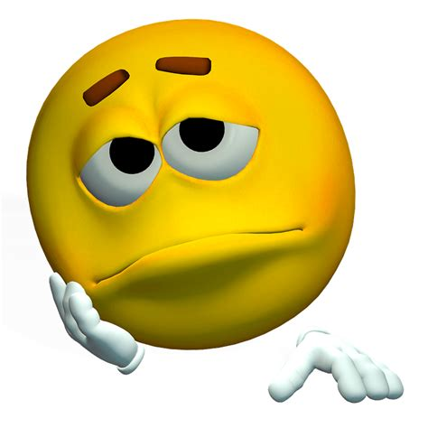
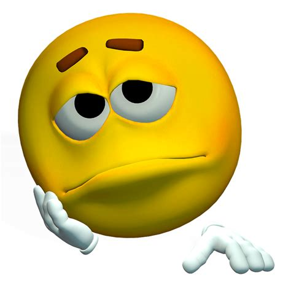
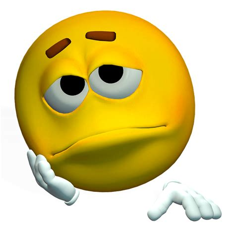

Sad: 
Sad: 
I am from Eritrea I did my
undergrade degree in
united Arab Emirates University.
The following are my class at MIU
(I used to read back in the days, but much these days....here goes!)
Best movies I watched
Happy: Sad: 